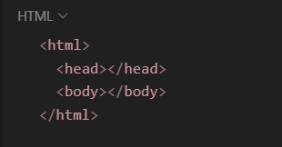

Desafio da dio
O que aprendi em "Introdução ao HTML na pratica"
Índice
O que é HTML?
HTML é uma linguagem de marcação utilizada na construção de páginas na Web. Documentos HTML podem ser interpretados por navegadores. A tecnologia é fruto da junção entre os padrões HyTime e SGML. HyTime é um padrão para a representação estruturada de hipermídia e conteúdo baseado em tempo (não sei muito sobre essas duas tecnologias).
Uma estrutura HTML é estruturada deste jeito:

html:
Tudo que estiver entre a tag "html" o navegador entenderá que é um HTML.
head:
No "head" terão coisas que o navegador vai carregar antes de exibir para o usuário.
body:
Coisas que forem colocadas entre o "corpo" irão aparecer para o usuário.
Tags são instruções que informam o navegador como formatar o texto. Você pode usar tags para definir itálico, quebras de linha, objetos, bullet points e muito mais. Essas tags estão presentes no HTML (Hypertext Markup Language) de todas as páginas da internet. As Tags servem para marcar onde começam e terminam os Elementos. O arquivo HTML contém muitos tipos de Tags, como por exemplo, entro da tag "head" existe uma tag chamada "title", "title" é o título daquela página.
Atributos de Tags:
São propriedades que uma tag pode ter. Existem atributos que são genéricas, ou seja, algumas tags sempre vão ter, e outras são especificas de cada tag.
Exemplo, na tag “Strong” posso colocar o atributo “id=”Título” cujo é um identificador deste elemento.

Mais tarde vou aprender como o JavaScript tem o poder de ler o html e trocar o conteúdo de um elemento especifico. Por exemplo, troca o texto ao clicar em um botão.
O que é CSS?
O CSS é uma forma de você formatar seu HTML. São comandos pré definidos que fazem com que o navegador entenda como formatar (deixar bonito) do jeito que eu instruí-lo (trocar a cor, mudar o formato das letras, etc…).
Style serve para colocar um comando CSS direto no elemento. Exemplo:

Tipografias em HTML
A tipografia é uma parte fundamental do design de qualquer projeto web. Ela se refere à escolha e à aplicação de fontes e estilos de texto para transmitir a mensagem correta e criar uma Estética visual atraente. No contexto do HTML, a tipografia é a maneira de formatar e exibir o texto nos sites.
Exemplos:

Listas ordeadas e não ordenadas
Uma lista ordenada é uma lista de itens enumerada. As listas ordenadas começam com a tag "ol" e cada item da lista começa com a tag "li". Uma lista não ordenada é uma lista de itens. As listas de itens são marcadas com bullets (tipicamente pequenos círculos pretos). Uma lista não ordenada começa com a tag "ul". Cada item da lista começa com a tag "li" também.

Sobre Links
No âmbito da informática, a palavra link pode significar hiperligação, ou seja, uma palavra, texto ou imagem que quando é clicada pelo usuário, o encaminha para outra página na internet, que pode conter outros textos ou imagens.
Como usar:

Como fazer um link interagir com a própria página:
Considere estar criando dois arquivos Html, um se chama "Index.html" e o outro "about.html"...
Outros Links úteis:
< Voltar ao início da página